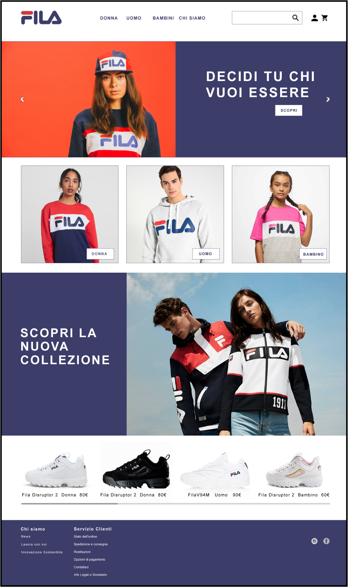
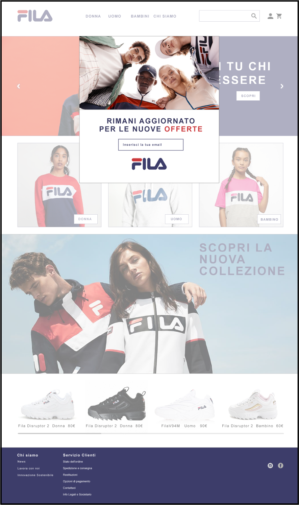
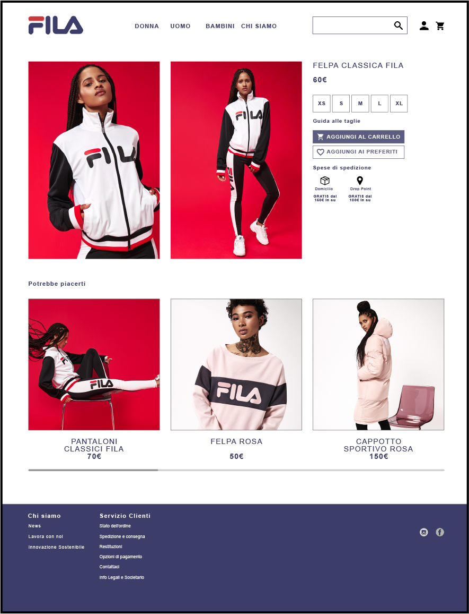
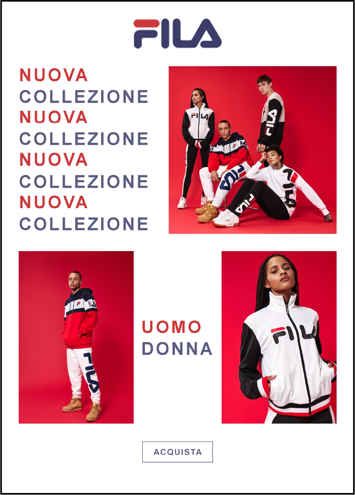
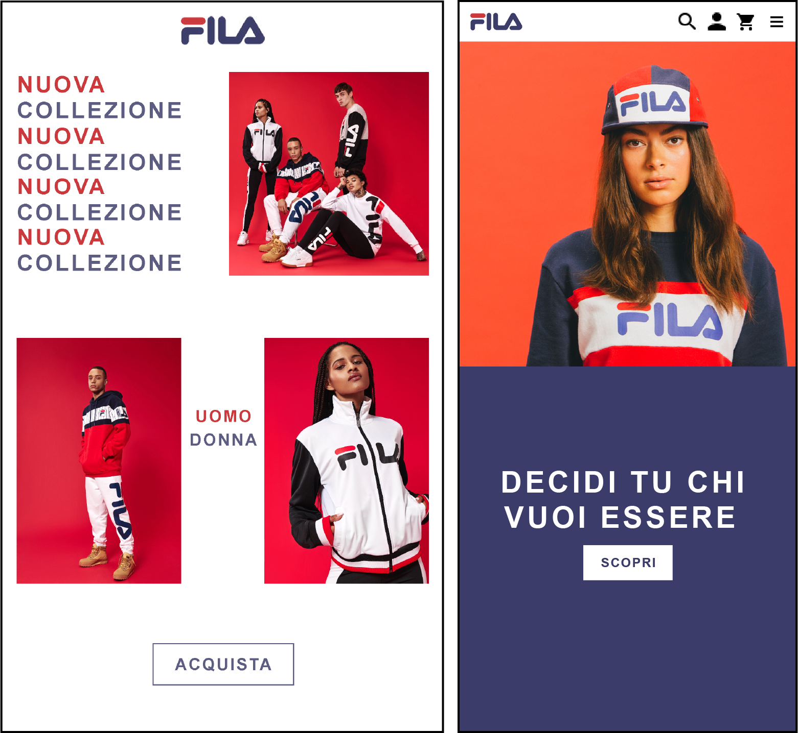

Fila
Per il workshop Ux/Ui svoltosi a giugno del 2019 all'Accademia di Belle Arti di Roma è stato chiesto di riproporre la home del sito della Fila, il rispettivo pop-up, una pagina con i prodotti e la newsletter, sia per web che per mobile.




